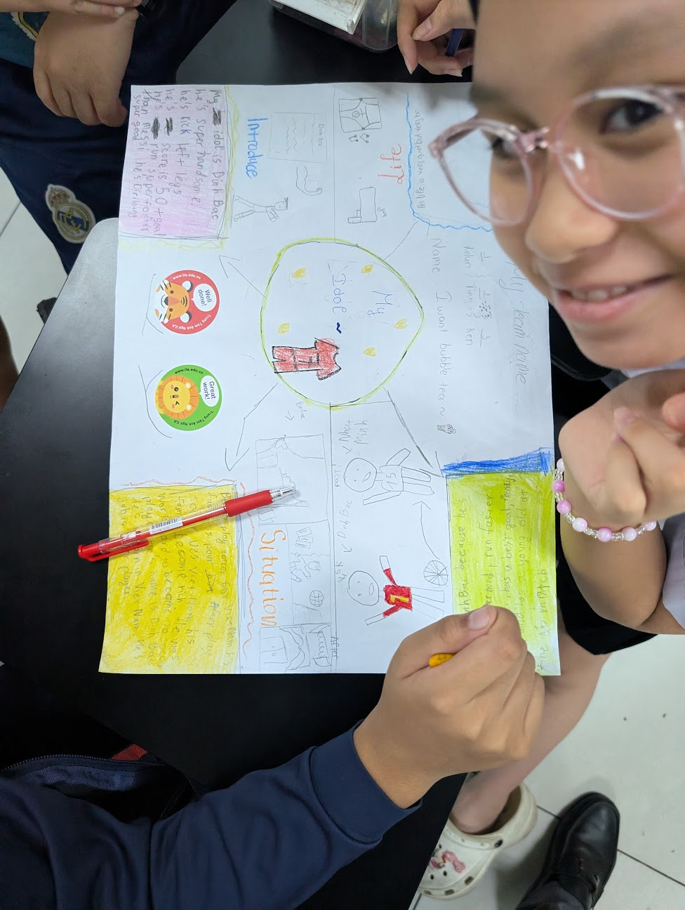
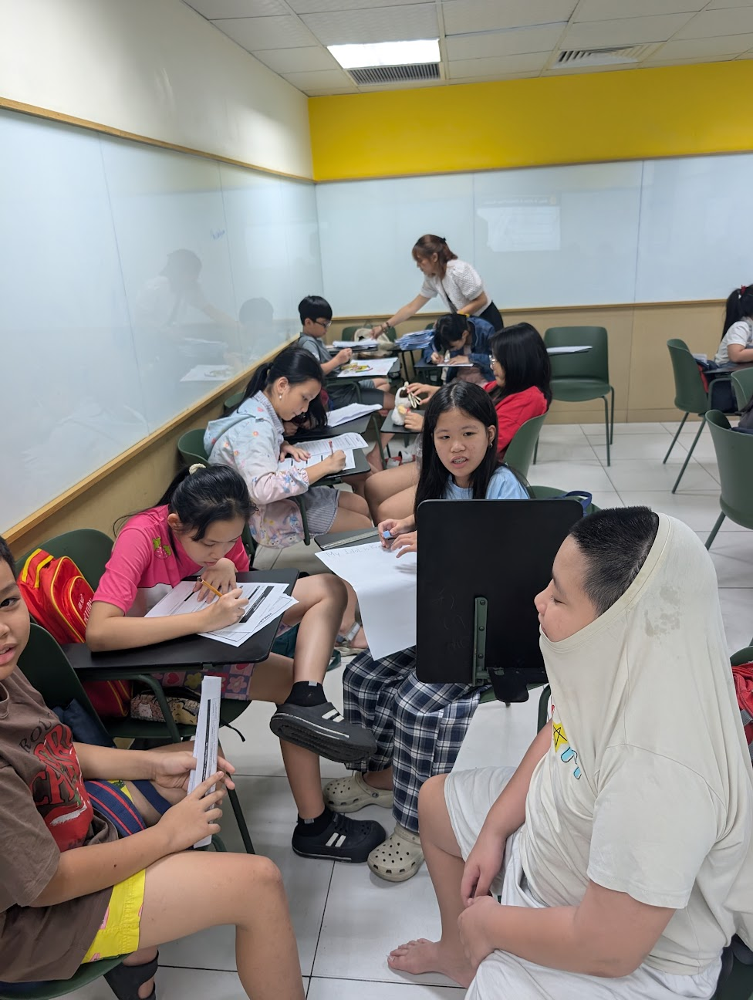
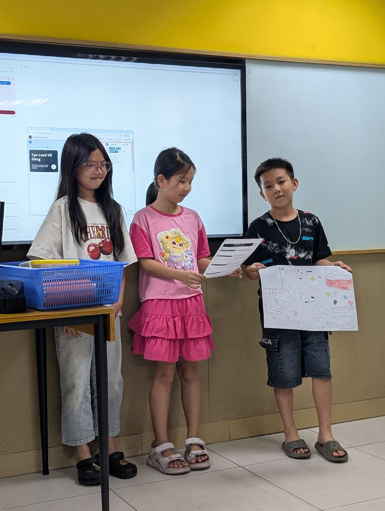
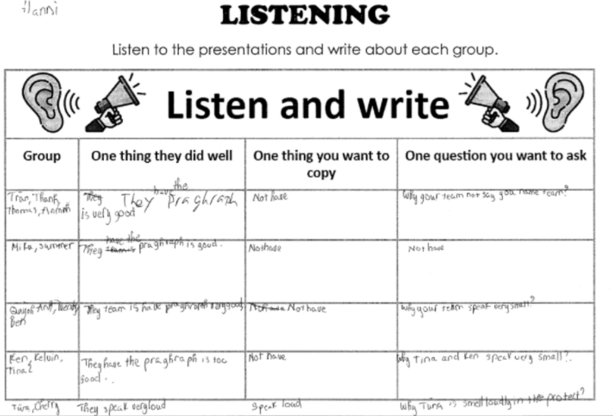
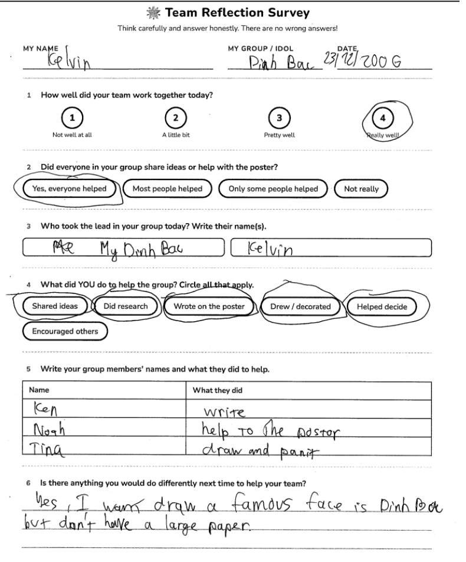

I implemented a two-lesson project-based learning sequence for a J4B class at ILA Vietnam (A2-level, ages 9–11). Students researched a person they admired, created a poster, wrote a presentation script, and delivered an oral presentation to the class. I assessed their work using an analytic rubric covering six criteria: Communication, Collaboration, Creativity, Critical Thinking, Reflection, and Language Use.
Key successes included:
Significant challenges included:
These challenges reflect InTASC Standards 4 and 5: anticipating student misconceptions and designing tasks that give students authentic, meaningful reasons to use language.
The rubric introduction included slides showing five performance levels in student-friendly language, with guiding questions for each criterion. For Communication, the guiding question was "Did I share my ideas?"; for Language Use, "Did I use good English?" Students received printed copies of the rubric to reference during their work.
Peer and self-assessment occurred through four instruments:

Example of a completed listening handout
Summative scores and feedback were entered into the institution's learning management system for parent communication.

Team reflection survey used after presentations
Group averages ranged from 4.4 to 5.0 out of 5.
Strengths across the class:
Areas of struggle:
Contextual factors I considered when scoring:
Drawing on multiple data sources -- rubric scores, direct observation, listening handouts, and team surveys -- made this a more honest and complete picture of student performance than a single assessment instrument would have provided. This approach reflects InTASC Standard 6.
As a teacher assessment tool, the six criteria and five-point scale worked well. The framework gave me clear, meaningful distinctions across groups and criteria, especially when I cross-referenced rubric scores with direct observation and survey responses.
For student use, the rubric was too complex. Six criteria created excessive cognitive load for A2-level learners who had not used rubrics before and were simultaneously managing English production and a new task format. During self-assessments, I found myself providing substantial scaffolding rather than students engaging with the criteria independently. Many students gave surface-level responses on the reflection handouts, suggesting discomfort with the metacognitive demands rather than genuine reflection on their learning.
Proposed revisions for student use:
There is a real tension in this unit: the course assignment required an analytic rubric format, and that format genuinely served my assessment needs. But it did not serve student self-assessment at this level. The revisions above would maintain teacher-assessment effectiveness while making the criteria accessible and useful to students, which is what InTASC Standard 6 asks for in terms of transparency and utility.
Improvement 1: Group students by interest rather than ability.
"In future iterations I would give students the opportunity to self-organize around a shared idol first."
The driving question for this project only functions as a genuine motivator when students care about the person they are researching. When students are assigned to a group researching someone they did not choose, the authentic purpose of the task is diminished. Allowing students to self-organize around shared interest also introduces negotiation and compromise as incidental skills. This reflects InTASC Standard 5: connecting content to students' own lives and interests to make language use meaningful rather than performative.
Improvement 2: Address poster format expectations through explicit questioning.
The teacher-model presentation I used demonstrated spoken delivery clearly, but it did not sufficiently address the difference between what belongs on a poster and what belongs in a spoken script. Students defaulted to writing full sentences on their posters and reading from them verbatim. For a future iteration, I would build in targeted questioning during the work phase, asking students directly: "Are there full sentences on your poster?" and "Are you going to read from it?" These questions address the specific misconception before it shapes the final product. This reflects InTASC Standard 4: identifying and directly addressing predictable student misconceptions rather than assuming prior instruction was sufficient.